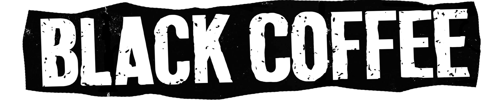

ZINE
ZINE é um tipo de "Mini-Revista" Independente e de pequena prenssagem, seguindo o modelo DIY; ela envolve fotocopias, desenhos, Colagens e também Textos expressando ideias/políticas sem seguir nenhum padrão de revista tradicional. O Zine da BlackCoffee contém um resumo da banda, que é atualizado anualmente e é distribuído nos nossos shows até acabarem todas as impressões. Temos uma edição de zine Bimestral disponível somente no site da BlackCoffee e contém textos, tirinhas Yonkoma (quatro quadrinhos na vertical), aquela dose de Café Preto figurativa.
Baixe o Zine da BlackCoffee em PDF e imprima em casa, ou se preferir, adiquira a versão impressa nos nossos shows!
STENCIL
O stencil é uma ferramenta/forma de arte Rápida, discreta, barata e eficiente, tendo seu inicio(da forma como o conhecemos hoje)na China entre 500/1500 a.C..

Existem vários tipos de stencil, como rolinho de pintura, stencil positivo/negativo, inclusive nosso corpo pode servir de stencil pra quando vamos pintar algo que tenha formato de Mão, por exemplo(como na "Cova de las Manos", na Argentina); É a ferramenta perfeita para Artistas e Ativistas por ser de fácil acesso e permitindo que a Idéia/Arte seja transmitida sem que identificados por alguma autoridade(vide Banksy).
Esses moldes de stencil da BlackCoffee, você pode fazer patches, posteres, camisetas, desenhos simples, cartões, Protestos, e não necessariamente algo da BlackCoffee; sinta-se livre pra se expressar!